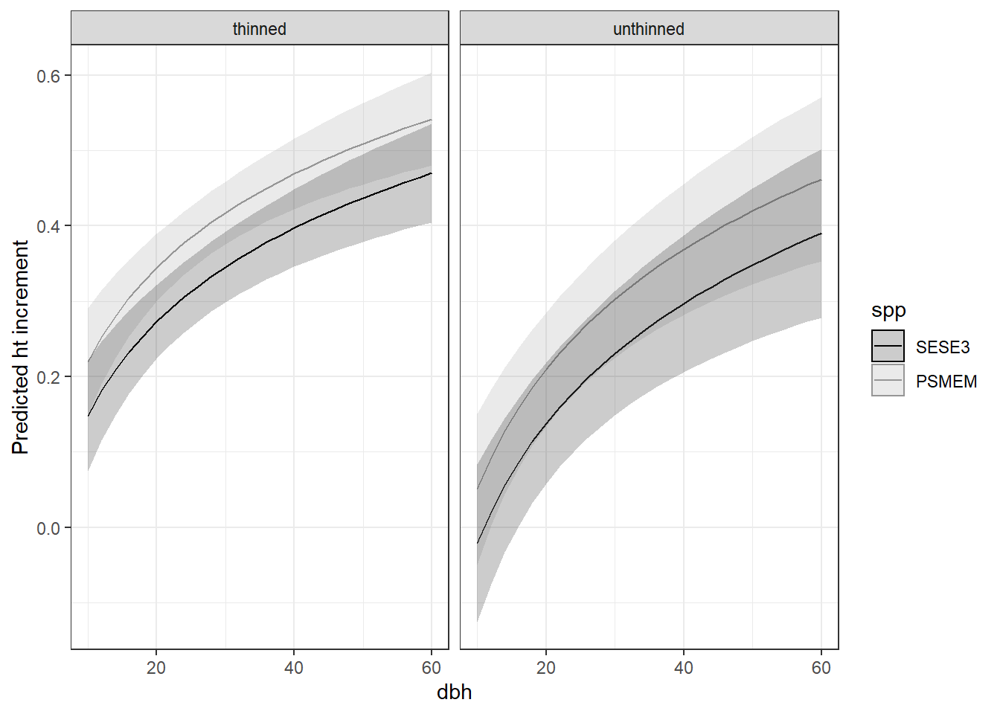
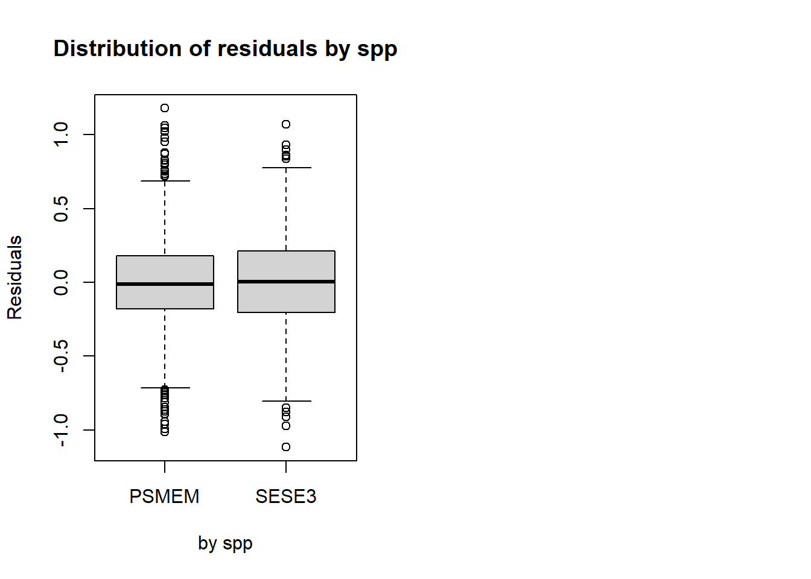
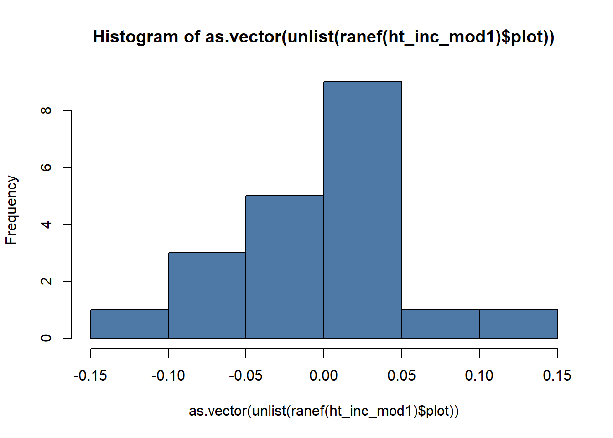

Height increment model
library(lme4)## Loading required package: Matrix##
## Attaching package: 'Matrix'## The following objects are masked from 'package:tidyr':
##
## expand, pack, unpacklibrary(emmeans)
library(MuMIn)
palette("Tableau 10")
library(broom.mixed)Introduction
I need to predict missing heights in 2018 in order to complete other steps of the analysis and provide better summary data. To accomplish this, I will model height increment as a function of the continuous predictor, dbh, as well as a combination of nested groupings: year, treatment, plot, and species. Additionally, height increment response is of interest in it’s own right. While height growth in trees is less responsive to conditions then diameter, it would be important to see whether there is a difference detected between treatments.
Defining trees of interest
First, I’ll define the dataset of interest as only years 2013 and 2018 observations of healthy, non-leaning, unbroken SESE or PSME trees. I’ll also define three other alternative treatment groupings for consideration: thinned/unthinned, H/L/C (thinning type), and 40/80/C (thinning intensity).
I will predict height increment based on the beginning of period dbh. Predicting based on the end of period dbh resulted in a lower AIC, but I am defaulting to typical practice.
I’m also using height increment from both 2008 - 2013 and 2013 to 2018.
# test_d2 <- d_l %>%
# group_by(tree_id) %>%
# filter(
# spp %in% c("SESE3", "PSMEM"),
# year %in% c("13", "18"),
# live,
# !get_cond(2, 3, 5),
# !is.na(ht_inc2) & !is.na(dbh)
# ) %>%
# mutate(
# treatment2 = str_extract(treatment, "C|H|L"),
# treatment3 = str_extract(treatment, "C|40|80"),
# treatment4 = if_else(str_detect(treatment, "C"), "unthinned", "thinned"),
# year = factor(year, levels = c("13", "18"), ordered = FALSE)
# ) %>%
# select(starts_with("treatment"), spp, year, tree_id, dbh, ht_inc2, plot, x, y)
test_d <- d_l %>%
group_by(tree_id) %>%
filter(
spp %in% c("SESE3", "PSMEM"),
year %in% c("08", "13"),
lead(live),
!lead(get_cond(2, 3, 5)),
!is.na(ht_inc1) & !is.na(dbh),
) %>%
ungroup() %>%
mutate(
treatment2 = str_extract(treatment, "C|H|L"),
treatment3 = str_extract(treatment, "C|40|80"),
treatment4 = if_else(str_detect(treatment, "C"), "unthinned", "thinned"),
year = factor(year, levels = c("08", "13"), ordered = FALSE)
) %>%
select(starts_with("treatment"), spp, year, tree_id, dbh, ht_inc1, plot, x, y)
# test_d12 <- d_l %>%
# group_by(tree_id) %>%
# filter(
# spp %in% c("SESE3", "PSMEM"),
# year %in% c("13"),
# lead(live),
# !lead(get_cond(2, 3, 5)),
# !is.na(ht_inc1) & !is.na(dbh),
# ) %>%
# ungroup() %>%
# mutate(
# treatment2 = str_extract(treatment, "C|H|L"),
# treatment3 = str_extract(treatment, "C|40|80"),
# treatment4 = if_else(str_detect(treatment, "C"), "unthinned", "thinned"),
# year = factor(year, levels = c("13"), ordered = FALSE)
# ) %>%
# select(starts_with("treatment"), spp, year, tree_id, dbh, ht_inc1, plot, x, y)Assessment of linear relationship between dbh and height increment
We are pretty sure that height growth is correlated with diameter, in that larger trees are capable of more height growth than smaller ones. We also think that this relationship is probably not linear. I will take a look at log and square root transformations of dbh for linear prediction of height growth.
m0 <- lm(ht_inc1 ~ dbh * treatment * spp, data = test_d)
m1 <- update(m0, ~ sqrt(dbh) * treatment * spp)
m2 <- update(m0, ~ log(dbh) * treatment * spp)
test_d %>%
ggplot(aes(x = dbh, y = ht_inc1, color = spp)) +
geom_point(aes(color = spp), alpha = .5) +
facet_wrap(vars(treatment)) +
geom_line(aes(y = predict(m0), linetype = "linear"), size = 1) +
geom_line(aes(y = predict(m1), linetype = "sqrt"), size = 1.25) +
geom_line(aes(y = predict(m2), linetype = "log"), size = 1.25) +
scale_color_manual(
values = palette(),
name = "",
breaks = c("PSMEM", "SESE3", "linear", "sqrt", "log"),
)
rm(m0, m1, m2)It doesn’t look like it matters a whole lot with this noisy data. I’m going to use log transformation.
Global Model
The next step is going to specify our likely global model. In
general, we want to answer questions about how a given treatment
affected growth for each species. There may have also been different
responses between years. This will be a mixed model and I want to
control for the random effect of plot and tree_id. The global model will
include log(dbh) as well as the categories:
treatment, species, year, and all
their interactions. Resulting in the fixed effects:
ht_inc1 ~ log(dbh) * treatment * spp * year
Optimal random effects specification
We will determine the optimal random effects structure using the global fixed effects structure. I will select the best of the following random effects structures:
(1 | plot)
(1 | plot) + (1 | tree_id)
(log(dbh) | plot) + (1 | tree_id)I’ll do this using AIC and Restricted Maximum Likelihood Estimation (REML), which I believe is the preferred method when comparing random effects structure, whereas ML is necessary when comparing different fixed effects.
f0 <- formula(ht_inc1 ~ log(dbh) * treatment * spp * year)
m0 <- nlme::gls(f0, data = test_d, method = "REML")
m1 <- lmer(update(f0, ~ . + (1 | plot)), REML = TRUE, data = test_d)
m2 <- update(m1, ~ . + (1 | tree_id))## boundary (singular) fit: see help('isSingular')m3 <- update(m2, ~ . + (0 + log(dbh) | plot))## boundary (singular) fit: see help('isSingular')AIC(m0, m1, m2, m3)## df AIC
## m0 41 1009.0492
## m1 42 980.7354
## m2 43 982.7354
## m3 44 984.7354The optimal random effects structure, includes the random intercept
only for plot. I will assume this random effects structure
in all further height models.
Choosing a sub-model for fixed effects
The next step is to define a list of potential sub-models for fixed effects to determine the optimal structure.
fl <- list(
ht_inc1 ~ log(dbh) + (1 | plot),
ht_inc1 ~ log(dbh) + spp + (1 | plot),
ht_inc1 ~ log(dbh) * spp + (1 | plot),
ht_inc1 ~ log(dbh) + treatment + (1 | plot),
ht_inc1 ~ log(dbh) + treatment + spp + (1 | plot),
ht_inc1 ~ log(dbh) * spp + treatment + (1 | plot),
ht_inc1 ~ log(dbh) + treatment * spp + (1 | plot),
ht_inc1 ~ log(dbh) * spp * treatment * year + (1 | plot),
ht_inc1 ~ log(dbh) + spp * year + treatment + (1 | plot),
ht_inc1 ~ log(dbh) + spp + treatment * year + (1 | plot),
ht_inc1 ~ log(dbh) * treatment * year + spp + (1 | plot),
ht_inc1 ~ log(dbh) + treatment + year + spp + (1 | plot),
ht_inc1 ~ log(dbh) + treatment2 + (1 | plot),
ht_inc1 ~ log(dbh) + treatment2 + spp + (1 | plot),
ht_inc1 ~ log(dbh) * spp + treatment2 + (1 | plot),
ht_inc1 ~ log(dbh) + treatment2 * spp + (1 | plot),
ht_inc1 ~ log(dbh) * spp * treatment2 * year + (1 | plot),
ht_inc1 ~ log(dbh) + spp * year + treatment2 + (1 | plot),
ht_inc1 ~ log(dbh) + spp + treatment2 * year + (1 | plot),
ht_inc1 ~ log(dbh) * treatment2 * year + spp + (1 | plot),
ht_inc1 ~ log(dbh) + treatment2 + year + spp + (1 | plot),
ht_inc1 ~ log(dbh) + treatment3 + (1 | plot),
ht_inc1 ~ log(dbh) + treatment3 + spp + (1 | plot),
ht_inc1 ~ log(dbh) * spp + treatment3 + (1 | plot),
ht_inc1 ~ log(dbh) + treatment3 * spp + (1 | plot),
ht_inc1 ~ log(dbh) * spp * treatment3 * year + (1 | plot),
ht_inc1 ~ log(dbh) + spp * year + treatment3 + (1 | plot),
ht_inc1 ~ log(dbh) + spp + treatment3 * year + (1 | plot),
ht_inc1 ~ log(dbh) * treatment3 * year + spp + (1 | plot),
ht_inc1 ~ log(dbh) + treatment3 + year + spp + (1 | plot),
ht_inc1 ~ log(dbh) + treatment4 + (1 | plot),
ht_inc1 ~ log(dbh) * treatment4 + spp + (1 | plot),
ht_inc1 ~ log(dbh) * spp + treatment4 + (1 | plot),
ht_inc1 ~ log(dbh) + treatment4 * spp + (1 | plot),
ht_inc1 ~ log(dbh) * spp * treatment4 * year + (1 | plot),
ht_inc1 ~ log(dbh) + spp * year + treatment4 + (1 | plot),
ht_inc1 ~ log(dbh) + spp + treatment4 * year + (1 | plot),
ht_inc1 ~ log(dbh) * treatment4 * year + spp + (1 | plot),
ht_inc1 ~ log(dbh) + treatment4 + year + spp + (1 | plot)
)I use AIC to assess the fit of each of the models with coefficients estimated with ML in order to compare among various fixed effects.
get_aic(fl, data = test_d) %>%
kableExtra::kbl(caption = "AICS for ht increment models") %>%
kableExtra::kable_styling(full_width = FALSE)| row | formula | aicc | rmse | r2 |
|---|---|---|---|---|
| 29 | ht_inc1 ~ log(dbh) * treatment3 * year + spp + (1 | plot) | 836.6 | 0.311 | 0.11 / 0.13 |
| 38 | ht_inc1 ~ log(dbh) * treatment4 * year + spp + (1 | plot) | 838.2 | 0.311 | 0.1 / 0.13 |
| 11 | ht_inc1 ~ log(dbh) * treatment * year + spp + (1 | plot) | 839.5 | 0.309 | 0.12 / 0.14 |
| 10 | ht_inc1 ~ log(dbh) + spp + treatment * year + (1 | plot) | 842.2 | 0.312 | 0.11 / 0.13 |
| 20 | ht_inc1 ~ log(dbh) * treatment2 * year + spp + (1 | plot) | 845.2 | 0.311 | 0.1 / 0.13 |
| 35 | ht_inc1 ~ log(dbh) * spp * treatment4 * year + (1 | plot) | 845.3 | 0.311 | 0.1 / 0.13 |
| 28 | ht_inc1 ~ log(dbh) + spp + treatment3 * year + (1 | plot) | 845.4 | 0.313 | 0.1 / 0.12 |
| 17 | ht_inc1 ~ log(dbh) * spp * treatment2 * year + (1 | plot) | 847.2 | 0.309 | 0.11 / 0.14 |
| 37 | ht_inc1 ~ log(dbh) + spp + treatment4 * year + (1 | plot) | 849.0 | 0.313 | 0.09 / 0.12 |
| 26 | ht_inc1 ~ log(dbh) * spp * treatment3 * year + (1 | plot) | 850.9 | 0.310 | 0.11 / 0.14 |
| 30 | ht_inc1 ~ log(dbh) + treatment3 + year + spp + (1 | plot) | 851.4 | 0.314 | 0.09 / 0.12 |
| 19 | ht_inc1 ~ log(dbh) + spp + treatment2 * year + (1 | plot) | 851.7 | 0.313 | 0.09 / 0.12 |
| 24 | ht_inc1 ~ log(dbh) * spp + treatment3 + (1 | plot) | 851.9 | 0.314 | 0.09 / 0.12 |
| 23 | ht_inc1 ~ log(dbh) + treatment3 + spp + (1 | plot) | 852.3 | 0.314 | 0.09 / 0.11 |
| 27 | ht_inc1 ~ log(dbh) + spp * year + treatment3 + (1 | plot) | 853.1 | 0.314 | 0.09 / 0.12 |
| 25 | ht_inc1 ~ log(dbh) + treatment3 * spp + (1 | plot) | 854.1 | 0.314 | 0.09 / 0.12 |
| 39 | ht_inc1 ~ log(dbh) + treatment4 + year + spp + (1 | plot) | 854.3 | 0.314 | 0.08 / 0.12 |
| 33 | ht_inc1 ~ log(dbh) * spp + treatment4 + (1 | plot) | 854.5 | 0.314 | 0.08 / 0.12 |
| 16 | ht_inc1 ~ log(dbh) + treatment2 * spp + (1 | plot) | 854.6 | 0.314 | 0.09 / 0.12 |
| 12 | ht_inc1 ~ log(dbh) + treatment + year + spp + (1 | plot) | 855.0 | 0.314 | 0.09 / 0.12 |
| 34 | ht_inc1 ~ log(dbh) + treatment4 * spp + (1 | plot) | 855.1 | 0.314 | 0.08 / 0.12 |
| 6 | ht_inc1 ~ log(dbh) * spp + treatment + (1 | plot) | 855.2 | 0.314 | 0.09 / 0.12 |
| 8 | ht_inc1 ~ log(dbh) * spp * treatment * year + (1 | plot) | 855.7 | 0.307 | 0.13 / 0.15 |
| 5 | ht_inc1 ~ log(dbh) + treatment + spp + (1 | plot) | 855.7 | 0.314 | 0.09 / 0.11 |
| 21 | ht_inc1 ~ log(dbh) + treatment2 + year + spp + (1 | plot) | 855.9 | 0.314 | 0.09 / 0.12 |
| 15 | ht_inc1 ~ log(dbh) * spp + treatment2 + (1 | plot) | 855.9 | 0.314 | 0.09 / 0.12 |
| 36 | ht_inc1 ~ log(dbh) + spp * year + treatment4 + (1 | plot) | 856.1 | 0.314 | 0.08 / 0.12 |
| 32 | ht_inc1 ~ log(dbh) * treatment4 + spp + (1 | plot) | 856.4 | 0.314 | 0.08 / 0.11 |
| 9 | ht_inc1 ~ log(dbh) + spp * year + treatment + (1 | plot) | 856.7 | 0.314 | 0.09 / 0.12 |
| 14 | ht_inc1 ~ log(dbh) + treatment2 + spp + (1 | plot) | 856.7 | 0.314 | 0.08 / 0.11 |
| 7 | ht_inc1 ~ log(dbh) + treatment * spp + (1 | plot) | 857.6 | 0.314 | 0.1 / 0.12 |
| 18 | ht_inc1 ~ log(dbh) + spp * year + treatment2 + (1 | plot) | 857.7 | 0.314 | 0.09 / 0.12 |
| 3 | ht_inc1 ~ log(dbh) * spp + (1 | plot) | 861.4 | 0.314 | 0.05 / 0.11 |
| 2 | ht_inc1 ~ log(dbh) + spp + (1 | plot) | 861.7 | 0.314 | 0.05 / 0.11 |
| 22 | ht_inc1 ~ log(dbh) + treatment3 + (1 | plot) | 865.0 | 0.316 | 0.08 / 0.11 |
| 4 | ht_inc1 ~ log(dbh) + treatment + (1 | plot) | 867.8 | 0.316 | 0.08 / 0.11 |
| 31 | ht_inc1 ~ log(dbh) + treatment4 + (1 | plot) | 867.9 | 0.316 | 0.08 / 0.11 |
| 13 | ht_inc1 ~ log(dbh) + treatment2 + (1 | plot) | 868.7 | 0.316 | 0.08 / 0.11 |
| 1 | ht_inc1 ~ log(dbh) + (1 | plot) | 872.9 | 0.315 | 0.04 / 0.1 |
lmod <- function(fl) {
lmer(fl, data = test_d, REML = TRUE)
}
summary(lm(ht_inc1 ~ log(dbh) + treatment4 * spp, data = test_d))##
## Call:
## lm(formula = ht_inc1 ~ log(dbh) + treatment4 * spp, data = test_d)
##
## Residuals:
## Min 1Q Median 3Q Max
## -1.07861 -0.18844 -0.01071 0.20023 1.16646
##
## Coefficients:
## Estimate Std. Error t value Pr(>|t|)
## (Intercept) -0.18612 0.07916 -2.351 0.0188 *
## log(dbh) 0.18244 0.02407 7.580 5.93e-14 ***
## treatment4unthinned -0.14800 0.02058 -7.190 1.00e-12 ***
## sppSESE3 -0.08579 0.02075 -4.135 3.74e-05 ***
## treatment4unthinned:sppSESE3 0.07141 0.04545 1.571 0.1164
## ---
## Signif. codes: 0 '***' 0.001 '**' 0.01 '*' 0.05 '.' 0.1 ' ' 1
##
## Residual standard error: 0.322 on 1537 degrees of freedom
## Multiple R-squared: 0.08316, Adjusted R-squared: 0.08077
## F-statistic: 34.85 on 4 and 1537 DF, p-value: < 2.2e-16summary(lmod(fl[[32]]))## Linear mixed model fit by REML ['lmerMod']
## Formula: ht_inc1 ~ log(dbh) * treatment4 + spp + (1 | plot)
## Data: test_d
##
## REML criterion at convergence: 869.2
##
## Scaled residuals:
## Min 1Q Median 3Q Max
## -3.5336 -0.5870 -0.0200 0.6025 3.7332
##
## Random effects:
## Groups Name Variance Std.Dev.
## plot (Intercept) 0.003956 0.06289
## Residual 0.099708 0.31577
## Number of obs: 1542, groups: plot, 20
##
## Fixed effects:
## Estimate Std. Error t value
## (Intercept) -0.19372 0.09972 -1.943
## log(dbh) 0.17961 0.02966 6.056
## treatment4unthinned -0.28388 0.17174 -1.653
## sppSESE3 -0.07182 0.01867 -3.847
## log(dbh):treatment4unthinned 0.04983 0.05249 0.949
##
## Correlation of Fixed Effects:
## (Intr) lg(db) trtmn4 sSESE3
## log(dbh) -0.980
## trtmnt4nthn -0.582 0.569
## sppSESE3 -0.074 0.013 0.054
## lg(dbh):tr4 0.556 -0.565 -0.973 -0.038Best model (scrapping above)
While these models are interesting, there is reason to believe that our height measurements are not precise enough to capture the small height differences between treatments (around 3 feet). For this reason, I will default to a simple additive model that includes spp and treatment.
ht_inc_mod1 <- lmod(fl[[32]])
summary(ht_inc_mod1)## Linear mixed model fit by REML ['lmerMod']
## Formula: ht_inc1 ~ log(dbh) * treatment4 + spp + (1 | plot)
## Data: test_d
##
## REML criterion at convergence: 869.2
##
## Scaled residuals:
## Min 1Q Median 3Q Max
## -3.5336 -0.5870 -0.0200 0.6025 3.7332
##
## Random effects:
## Groups Name Variance Std.Dev.
## plot (Intercept) 0.003956 0.06289
## Residual 0.099708 0.31577
## Number of obs: 1542, groups: plot, 20
##
## Fixed effects:
## Estimate Std. Error t value
## (Intercept) -0.19372 0.09972 -1.943
## log(dbh) 0.17961 0.02966 6.056
## treatment4unthinned -0.28388 0.17174 -1.653
## sppSESE3 -0.07182 0.01867 -3.847
## log(dbh):treatment4unthinned 0.04983 0.05249 0.949
##
## Correlation of Fixed Effects:
## (Intr) lg(db) trtmn4 sSESE3
## log(dbh) -0.980
## trtmnt4nthn -0.582 0.569
## sppSESE3 -0.074 0.013 0.054
## lg(dbh):tr4 0.556 -0.565 -0.973 -0.038Here is the summary table of the model used for predicting height increments and thus heights
sjPlot::tab_model(ht_inc_mod1,
dv.labels = "Height increment",
show.ci = FALSE,
show.se = TRUE,
show.icc = FALSE
)## Registered S3 method overwritten by 'parameters':
## method from
## format.parameters_distribution datawizard| Height increment | |||
|---|---|---|---|
| Predictors | Estimates | std. Error | p |
| (Intercept) | -0.19 | 0.10 | 0.052 |
| dbh [log] | 0.18 | 0.03 | <0.001 |
| treatment4 [unthinned] | -0.28 | 0.17 | 0.099 |
| spp [SESE3] | -0.07 | 0.02 | <0.001 |
|
dbh [log] * treatment4 [unthinned] |
0.05 | 0.05 | 0.343 |
| Random Effects | |||
| σ2 | 0.10 | ||
| τ00 plot | 0.00 | ||
| N plot | 20 | ||
| Observations | 1542 | ||
| Marginal R2 / Conditional R2 | 0.083 / 0.118 | ||
modelsummary::modelsummary(ht_inc_mod1)| Model 1 | |
|---|---|
| (Intercept) | -0.194 |
| (0.100) | |
| log(dbh) | 0.180 |
| (0.030) | |
| treatment4unthinned | -0.284 |
| (0.172) | |
| sppSESE3 | -0.072 |
| (0.019) | |
| log(dbh) × treatment4unthinned | 0.050 |
| (0.052) | |
| sd__(Intercept) | 0.063 |
| sd__Observation | 0.316 |
| AIC | 883.2 |
| BIC | 920.6 |
| Log.Lik. | -434.596 |
| REMLcrit | 869.192 |
Best model estimated means
switch to model 32
# changed model here treatment4
emmip(
lmod(fl[[32]]),
spp ~ dbh | treatment4,
CIs = TRUE,
plotit = FALSE,
at = list(dbh = seq(10, 60, 2))
) %>%
ggplot(aes(dbh, yvar, color = spp)) +
geom_line() +
facet_wrap(~ treatment4 ) +
geom_ribbon(aes(ymin = LCL, ymax = UCL, color = NULL, fill = spp), alpha = .2) +
theme_bw() +
scale_color_manual(
values = c(SESE3 = "black", PSMEM = "#969696"),
aesthetics = c("color", "fill")
) +
labs(y = "Predicted ht increment")
emmip(
lmod(fl[[5]]),
spp ~ dbh | treatment,
CIs = TRUE,
plotit = FALSE,
at = list(dbh = seq(10, 60, 2))
) %>%
ggplot(aes(dbh, yvar, color = spp)) +
geom_line() +
facet_wrap(~ treatment ) +
theme_bw() +
geom_ribbon(aes(ymin = LCL, ymax = UCL, color = NULL, fill = spp), alpha = .2) +
scale_color_manual(
values = c(SESE3 = "black", PSMEM = "#969696"),
aesthetics = c("color", "fill")
) +
labs(y = "Predicted ht increment", title = "alternative model with treatment and species")emmeans(ht_inc_mod1, pairwise ~ treatment4, by = c("spp"))## $emmeans
## spp = PSMEM:
## treatment4 emmean SE df lower.CL upper.CL
## thinned 0.394 0.0200 22.4 0.353 0.436
## unthinned 0.274 0.0355 14.9 0.198 0.349
##
## spp = SESE3:
## treatment4 emmean SE df lower.CL upper.CL
## thinned 0.322 0.0228 37.0 0.276 0.369
## unthinned 0.202 0.0385 20.4 0.121 0.282
##
## Degrees-of-freedom method: kenward-roger
## Confidence level used: 0.95
##
## $contrasts
## spp = PSMEM:
## contrast estimate SE df t.ratio p.value
## thinned - unthinned 0.121 0.0402 15.5 3.003 0.0087
##
## spp = SESE3:
## contrast estimate SE df t.ratio p.value
## thinned - unthinned 0.121 0.0402 15.5 3.003 0.0087
##
## Degrees-of-freedom method: kenward-rogerBest model validation
# augment data with fitted, residual cooks distance and leverage
augment1 <- function(dat, mod) {
dat %>% mutate(
fitted = fitted(mod),
resid = resid(mod, type = "pearson", scaled = TRUE),
cooks = cooks.distance(mod),
lev = hatvalues(mod)
)
}
ht_inc_d <- augment1(test_d, ht_inc_mod1)Residual vs fitted
I also plot residual vs the predictor
par(mfrow = c(1, 2))
plot(
resid ~ fitted,
data = ht_inc_d,
pch = 16,
xlab = "fitted values",
ylab = "Scaled residuals",
main = "Residual vs fitted",
col = 2
)
abline(0,0)
plot(
resid ~ log(dbh),
data = ht_inc_d,
xlab = "log(dbh)",
ylab = "Scaled residuals",
main = "Residual vs log(dbh)",
col = 2,
pch = 16
)
abline(0,0)
with(
model.frame(ht_inc_mod1),
boxplot(
resid(ht_inc_mod1, type = "pearson") ~ spp,
xlab = "by spp",
ylab = "Residuals",
main = "Distribution of residuals by spp"
)
)
Homogeneity of random group residuals
I can check that random group residuals are homogenous
plot(
ht_inc_mod1,
resid(., scaled=TRUE) ~ fitted(.)| plot,
abline = 0,
pch = 16,
xlab = "Fitted values",
ylab = "Standardised residuals"
)
Normality of residuals
Checking for normality of residuals. The tails are perhaps a bit fat, I’m not sure if this requires attention or not.
qqnorm(resid(ht_inc_mod1, type = "pearson"), pch=16, col = 1, main = "QQplot for pearosn residuals")
qqline(resid(ht_inc_mod1, type = "pearson"))
Leverage and Cooks distance
Cooks outliers, defined as > 3 x mean(cooks distance) are colored in red. None of these “outliers” seem like they would disproportionately affect regression.
# Plot leverage against standardised residuals
plot(
resid ~ lev,
data = ht_inc_d,
las = 1,
ylab = "Standardised residuals",
xlab = "Leverage",
col = palette.colors(palette = "tableau10", alpha = .5)[1],
main = "Leverage vs residuals",
pch = 16
)
points(resid ~ lev, data = filter(ht_inc_d, cooks > 3 * mean(cooks)), pch = 16, col =3)
Random effects distribution
The distribution of random effects (plots) should be roughly normal. Here our distribution is skewed, from what I’ve read, this should not be a problem for estimates or their std’s.
hist(as.vector(unlist(ranef(ht_inc_mod1)$plot)), col = 1)
Update data with predicted heights
I will start by predicting heights for Douglas-fir and Redwood only. I can only predict heights for trees in year 13 and 18, and only if they have a height in the previous period. I can predict heights for trees whose crown status did not change from one measurement to the next. I will be assuming that a broken tree resumes height growth at a “normal” rate.
I’ll predict heights for all trees and then filter this to include only observations of live trees that didn’t break, or get a dead top (or start leaning) from one observation to the next.
new_heights <- d_l %>%
mutate(treatment4 = if_else(str_detect(treatment, "C"), "unthinned", "thinned")) %>%
filter(spp %in% c("SESE3", "PSMEM")) %>%
mutate(pred_ht_inc = predict(ht_inc_mod1, newdata = .)) %>%
group_by(tree_id) %>%
mutate(
pred_ht = lag(ht) + lag(pred_ht_inc) * 5,
cond_chk = get_cond(2, 3, 5, 30, 31, 32, str = TRUE),
ht_p = case_when(
cond_chk == lag(cond_chk) & live & is.na(ht) ~ pred_ht,
TRUE ~ ht
)
) %>%
select(tree_id, year, ht_p) %>%
ungroup()Now I’ll update the data with height predictions for selected trees and fill in available heights for other species that were not predicted.
if ("ht_p" %in% names(d_l)) d_l["ht_p"] <- NULL
d_l <- left_join(d_l, new_heights, by = c("tree_id", "year")) %>%
mutate(ht_p = if_else(spp %in% c("SESE3", "PSMEM"), ht_p, ht))head(d_l)## # A tibble: 6 x 28
## plot treatment tree_id spp h_dist azi year dbh ht cr status bear rot notes cc cond live ba d_inc2 ht_inc2 ba_inc2 d_inc1 ht_inc1 ba_inc1 x y sdi_plot ht_p
## <chr> <chr> <chr> <chr> <dbl> <dbl> <ord> <dbl> <dbl> <dbl> <int> <lgl> <lgl> <chr> <int> <chr> <lgl> <dbl> <dbl> <dbl> <dbl> <dbl> <dbl> <dbl> <dbl> <dbl> <dbl> <dbl>
## 1 1H40 H40 1H40.1901 SESE3 12.9 10 init 27.4 23.5 30 1 FALSE FALSE BA_ac_ft~ NA "" TRUE 591. NA NA NA 0 0 0 4.10e5 4.57e6 1090. 23.5
## 2 1H40 H40 1H40.1901 SESE3 12.9 10 08 27.4 23.5 30 1 FALSE FALSE BA_ac_ft~ NA "" TRUE 591. 0 0 0 0.102 -3.96 4.42 4.10e5 4.57e6 449. 23.5
## 3 1H40 H40 1H40.1901 SESE3 12.9 10 13 27.9 3.66 0 5 FALSE NA Top blow~ -1 "3,7~ FALSE 613. 0.102 -3.96 4.42 NA NA NA 4.10e5 4.57e6 484. 3.66
## 4 1H40 H40 1H40.1901 SESE3 12.9 10 18 NA NA NA -5 FALSE NA <NA> NA "3,7~ FALSE NA NA NA NA NA NA NA 4.10e5 4.57e6 556. NA
## 5 1H40 H40 1H40.1902 SESE3 14.2 13 init 37.6 23.2 40 1 TRUE FALSE X NA "" TRUE 1110. NA NA NA 0 0 0 4.10e5 4.57e6 1090. 23.2
## 6 1H40 H40 1H40.1902 SESE3 14.2 13 08 37.6 23.2 40 1 TRUE FALSE X NA "" TRUE 1110. 0 0 0 0.559 -0.671 34.2 4.10e5 4.57e6 449. 23.2